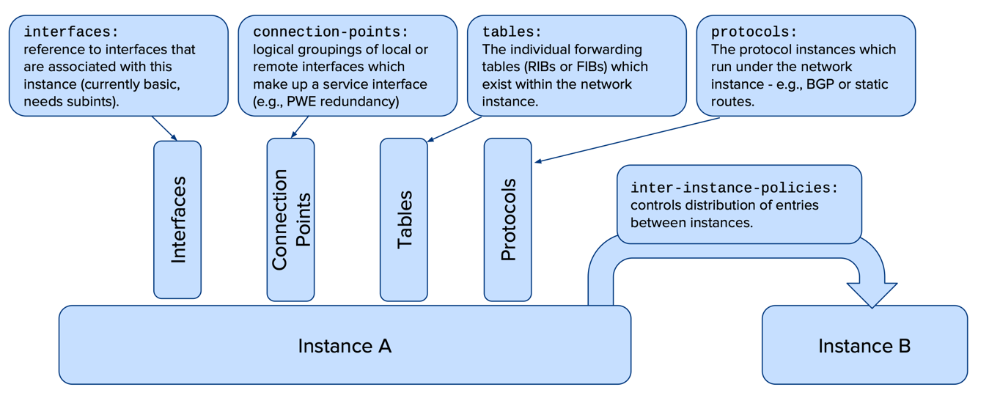
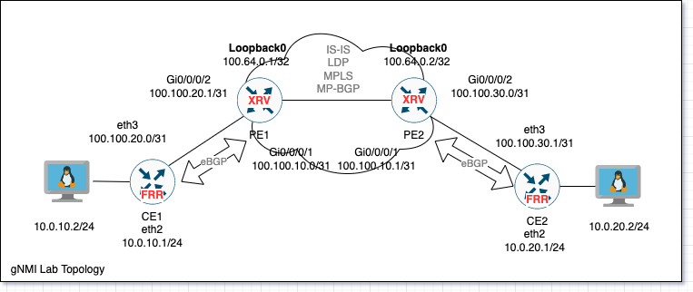

gNMI Network Automation (2/3) : gNMI Configuration of network devices
Introduction
In this post we are going to focus on 2 parts: 1- Use gRPC to configure a l3VPN backbone (IS-IS,MPLS,MP-BGP) in a 2 node IOS-XR backbone PE/P routers. 2- 2 customer edge CPEs (Using PreConfigured FRR Nodes) and 2 net-tool Linux containers will be used for testing connectivity (Configured using Bash). 2- Next article , we will use gNMI telemetry for gathering interface data and BGP/ISIS adjacency and collect them using Telegraf/InfluxDB and visualize them using Grafana.
OpenConfig vs Vendor
1st you need to separate gNMI from OpenConfig, gNMI is implemented very maturely and you can find nearly all Network vendors adheres to its standards, this gives you the way to send gRPC calls to the devices, on the other hand OpenConfig implementation widely vary, as you will see in this tutorial which focuses on IOS-XR, some features can be fully configured using OpenConfig schemas/Yangs, and some features mix and match between OpenConfig and Vendor specific Yangs.
For myself, I’d say there is a long way for OpenConfig to provide a uniform way to interact with multiple platforms.
A very good article to check for how OpenConfig implements the concept of VRFs and routing protocol, is to check their official OpenConfig RIB Approach, consider this a prerequsiste before you proceed with the below example, as Openconfig replaces the concept of VRF with a Network Instance, and instead of VRF being one RIB (Table in OpenConfig) with multiple Protocols (OSPF,BGP,..) installing routes into, some vendors do treat all the RIBs/tables under one VRF/Network-instance as one entitiy (RIB/Table), and so all protocol routes are used for best path selection like traditional routing, and some other vendors like Nokia keeps each Protocol table separate under each Network-instance, in this case, you will need to do OpenConfig’s Table-Connection between diffirent protocols tables under the same Network-Instance.
How can you figure out whether a vendor is implementing single table RIB or multi-table RIB ? You can always check the Deviations Yang file under the Yang implementation of the vendor, in our case its not supported on IOS-XR, as the deviations file shows, you can see in output below , that tables and table connections are not supported :
cat cisco-xr-openconfig-network-instance-deviations.yang
deviation "/oc-netinst:network-instances/oc-netinst:network-instance/oc-netinst:table-connections/oc-netinst:table-connection" {
deviate not-supported;
}
deviation "/oc-netinst:network-instances/oc-netinst:network-instance/oc-netinst:interfaces/oc-netinst:interface/oc-netinst:config/oc-netinst:associated-address-families" {
deviate not-supported;
}
deviation "/oc-netinst:network-instances/oc-netinst:network-instance/oc-netinst:tables/oc-netinst:table" {
deviate not-supported;
}
Here is a more clear representation from
the Anatomy of the Network Instance in OpenConfig

Solving the lack of documentation examples
I faced a big issue figuring out how each vendor implemenets the configuration parts of the gNMI tree, and through my exploration i found 2 ways to go about it :
1st Approach : from device CLI
In my IOS-XR example, some parts like the Routing Policies were not implemented in gNMI the same way you would write it in CLI, so what i did is opened a IOS-XR VM configured a route policy as follows :
route-policy ALLOW_ANY pass end-policy
Then in each vendor there is a way to show the configuration in an XML way , and some have a way to show it in the OpenConfig hirarichy like Cisco, you can use an online tool like CodeBeautify to convert XML into YAML :
#show running-config | xml openconfig
<routing-policy xmlns="http://openconfig.net/yang/routing-policy">
<policy-definitions>
<policy-definition>
<name>ALLOW_ANY</name>
<config>
<name>ALLOW_ANY</name>
</config>
<statements>
<statement>
<name>statement-1667049259886989</name>
<config>
<name>statement-1667049259886989</name>
</config>
<actions>
<config>
<accept-route/>
</config>
</actions>
</statement>
</statements>
</policy-definition>
</policy-definitions>
</routing-policy>
2nd Approach : Reading Yang files
If you dont have access to a live device, you can read the YANG trees of vendors or OpenConfig which you can clone from Vendor’s Yang Models in this link, you can fond your needed path in 2 ways :
- Tree hirarichy, including variable types and keys using PYang.
# pyang openconfig-network-instance.yang -f tree
module: openconfig-network-instance
+--rw network-instances
+--rw network-instance* [name]
+--rw name -> ../config/name
+--rw fdb
| +--rw config
| | +--rw mac-learning? boolean
| | +--rw mac-aging-time? uint16
| | +--rw maximum-entries? uint16
| +--ro state
| | +--ro mac-learning? boolean
...
- Using gNMIC extract all the paths in the yang Module (Does not include the variable types) but very handy when you want a path to insert into a Get call :
# gnmic path openconfig-network-instance.yang --file openconfig-network-instance.yang --config-only
/bgp/global/afi-safis/afi-safi[afi-safi-name=*]/afi-safi-name
/bgp/global/afi-safis/afi-safi[afi-safi-name=*]/config/afi-safi-name
/bgp/global/afi-safis/afi-safi[afi-safi-name=*]/config/enabled
...
Deviations
Each vendor implementation of gNMI has some deviations (Some parts not compitable with the OpenConfig Standard) which are documented in Yang files, you can find these Yang file in the same directory of the platform’s OpenConfig and Vendor specific yangs, for example, listing the Routing Policies yang in the IOS-XR 6.5.1 version.
- OpenConfig Yangs :
cisco_yang_models/yang/vendor/cisco/xr/651# ll | grep policy | grep openconfig
-rw-r--r-- 1 root root 28487 Oct 14 18:28 openconfig-bgp-policy.yang
-rw-r--r-- 1 root root 3688 Oct 14 18:28 openconfig-isis-policy.yang
-rw-r--r-- 1 root root 4265 Oct 14 18:28 openconfig-policy-types.yang
-rw-r--r-- 1 root root 27024 Oct 14 18:28 openconfig-routing-policy.yang
- Cisco specific implementation for configuration :
cisco_yang_models/yang/vendor/cisco/xr/651# ll | grep policy | grep Cisco | grep cfg
-rw-r--r-- 1 root root 12321 Oct 14 18:28 Cisco-IOS-XR-policy-repository-cfg.yang
- Cisco specific implementation for streaming telemetry :
cisco_yang_models/yang/vendor/cisco/xr/651# ll | grep policy | grep Cisco | grep oper
-rw-r--r-- 1 root root 9567 Oct 14 18:28 Cisco-IOS-XR-policy-repository-oper-sub1.yang
-rw-r--r-- 1 root root 9532 Oct 14 18:28 Cisco-IOS-XR-policy-repository-oper.yang
- Deviations - showing what is not supported usig the OpenConfig, in this case, you will need to use the vendor specific Yang :
cisco_yang_models/yang/vendor/cisco/xr/651# ll | grep policy | grep deviations
-rw-r--r-- 1 root root 2927 Oct 14 18:28 cisco-xr-openconfig-bgp-policy-deviations.yang
-rw-r--r-- 1 root root 1437 Oct 14 18:28 cisco-xr-openconfig-routing-policy-deviations.yang
Reading the Deviation file is important so you are able to figure out which parts of the OpenConfig is not supported by this platform, for examples in “cisco-xr-openconfig-routing-policy-deviations.yang” you will see : (This is a small sample from the file for readability)
deviation "/rpol:routing-policy/rpol:defined-sets/rpol:neighbor-sets" {
**deviate not-supported;**
}
Example Lab

You can find this Lab’s files on my github, we are using ContainerLab to deploy the setup and connect nodes to each other, after we have 3 diffirent node types to configure :
- Endpoint VMs : uses net-tools containers, configured using basic shell .
- CEs (FRRrouting) : using Containerlab configuration is deployed with initiation of the nodes, FRR Open routing software does not support gNMI since its normally deployed as a part of a bigger package.
- PEs (IOS-XRV 6.5.1) : these 2 PE/P will completly configured using gNMI.
Lets focus on our PEs configuration, gNMIC is a great tool/eco-system enable you to use gNMI Yaml configuraiton templates and variable files to simplify the configuration process, in our case , we will deploy configuration as Yaml, but not use Variable files, this will come in a later tutorial.
I Commented each part of the configuration:
# 02_xrv_pe1_gnmi.yml
updates:
# ================================================================================
# Interfacece configuration
# ================================================================================
# Used the Cisco Yangs for this part as the OpenConfig yangs does not directly configure the interface IP, it has to be configured on
# a sub-interface instead
# Interface GigabitEthernet0/0/0/1 Config
- path: Cisco-IOS-XR-ifmgr-cfg:/interface-configurations/interface-configuration[active=act][interface-name=GigabitEthernet0/0/0/1]
value:
description: to_PE2
Cisco-IOS-XR-ipv4-io-cfg:ipv4-network:
addresses:
primary:
address: 100.100.10.0
netmask: 255.255.255.254
encoding: json_ietf
# Interface GigabitEthernet0/0/0/2 Config
- path: Cisco-IOS-XR-ifmgr-cfg:/interface-configurations/interface-configuration[active=act][interface-name=GigabitEthernet0/0/0/2]
value:
description: to_CE1
Cisco-IOS-XR-ipv4-io-cfg:ipv4-network:
addresses:
primary:
address: 100.100.20.1
netmask: 255.255.255.254
encoding: json_ietf
# Interface Loopback0 Config
- path: Cisco-IOS-XR-ifmgr-cfg:/interface-configurations/interface-configuration[active=act][interface-name=Loopback0]
value:
description: PE1_Loopback
# Ciscos weird implementation dictates to enable some of configuration elements, you need to set it with Null,
# in this case to enable a Loopback, you need to set the interface-virtual to Null, dont worry , the Yang file mentions it
interface-virtual: [null]
Cisco-IOS-XR-ipv4-io-cfg:ipv4-network:
addresses:
primary:
address: 100.64.0.1
netmask: 255.255.255.255
encoding: json_ietf
# ================================================================================
# IS-IS
# ================================================================================
# Configuring ISIS using OpenConfig
- path: openconfig-network-instance:/network-instances/network-instance[name=default]/protocols
value:
protocol:
# Some identifiers and types are supported by the OpenConfig or vendor like openconfig-policy-types:ISIS
# you will be able to find them in separate Yang Files called types and so on
# So in this case , the platform may no recognise ISIS, you have to mention the Types Yang it belongs to
identifier: openconfig-policy-types:ISIS
name: default # This is the RIB name rather than a VRF name , under each Network-Instance (Global/VRF) you will find default RIB
isis:
global:
config:
level-capability: LEVEL_2
net:
- 49.0001.0064.0000.0001.00
afi-safi:
af:
- afi-name: openconfig-isis-types:IPV4
safi-name: openconfig-isis-types:UNICAST
interfaces:
interface:
- interface-id: Loopback0
config:
passive: true
afi-safi:
af:
- afi-name: openconfig-isis-types:IPV4
safi-name: openconfig-isis-types:UNICAST
config:
enabled: true
- interface-id: GigabitEthernet0/0/0/1
afi-safi:
af:
- afi-name: openconfig-isis-types:IPV4
safi-name: openconfig-isis-types:UNICAST
config:
enabled: true
# ================================================================================
# MPLS & LDP
# ================================================================================
# Note : since I am using IOS-XR 6.5.1 , only Cisco Yang models supported for MPLS & LDP
# Openconfig Yangs are not supported
- path: Cisco-IOS-XR-mpls-ldp-cfg:/mpls-ldp
value:
enable: [null]
default-vrf:
interfaces:
interface:
- interface-name: GigabitEthernet0/0/0/1
enable: [null]
# ================================================================================
# MP-BGP (We are using point to point peering instead of RR)
# ================================================================================
- path: openconfig-network-instance:/network-instances/network-instance[name=default]/protocols
value:
protocol:
- identifier: openconfig-policy-types:BGP
name: default
bgp:
global:
config:
as: 65000
router-id: 100.64.0.1
afi-safis:
afi-safi:
- afi-safi-name: openconfig-bgp-types:L3VPN_IPV4_UNICAST
config:
enabled: true
- afi-safi-name: openconfig-bgp-types:IPV4_UNICAST
config:
enabled: true
neighbors:
neighbor:
- neighbor-address: 100.64.0.2
config:
peer-as: 65000
afi-safis:
afi-safi:
- afi-safi-name: openconfig-bgp-types:L3VPN_IPV4_UNICAST
config:
enabled: true
- afi-safi-name: openconfig-bgp-types:IPV4_UNICAST
config:
enabled: true
transport:
config:
local-address: 100.64.0.1
# Configuring Next Hop Self will be deployed using Ciscos Yangs
# As no similar in OpenConfig
# Enablig Next-Hop-Self on both IPv4 and VPNv4 Families (No RR used)
- path: Cisco-IOS-XR-ipv4-bgp-cfg://bgp/instance[instance-name=default]/instance-as[as=0]/four-byte-as[as=65000]/default-vrf/bgp-entity/neighbors/neighbor[neighbor-address=100.64.0.2]/neighbor-afs/neighbor-af
value:
- af-name: ipv4-unicast
activate:
next-hop-self: true
- af-name: vpnv4-unicast
activate:
next-hop-self: true
# ================================================================================
# VRF Configuration
# ================================================================================
# Following 3 parts can be combined in one call, but i preferred to separate them to be easier to understand
# Configuring Allow all Route Policy , IOS-XR by default denies all if no Route
# Policy configured in eBGP session , cannot use the OpenConfig Yang for this policy , got a lot of issues
- path: Cisco-IOS-XR-policy-repository-cfg:/routing-policy
value:
route-policies:
route-policy:
route-policy-name: AcceptAny
rpl-route-policy: route-policy AcceptAny\n pass\nend-policy\n
# Create VRF
- path: openconfig-network-instance:/network-instances
value:
network-instance:
- name: CustomerVRF
config:
name: CustomerVRF
route-distinguisher: 1:1
# initiate OpenConfigs BGP-IPv4 table under the CustomerVRF network instance
- path: openconfig-network-instance:/network-instances/network-instance[name=CustomerVRF]
value:
config:
enabled-address-families: openconfig-types:IPV4
tables:
table:
- protocol: BGP
address-family: IPV4
config:
protocol: BGP
address-family: openconfig-types:IPV4
# Doing redistribute Connected into VRF , using Ciscos Yangs, not available in OpenConfig:
- path: Cisco-IOS-XR-ipv4-bgp-cfg:/bgp/instance[instance-name=default]/instance-as[as=0]/four-byte-as[as=65000]/vrfs/vrf[vrf-name=CustomerVRF]/vrf-global/vrf-global-afs/vrf-global-af[af-name=ipv4-unicast]/connected-routes
value: null
# Doing redistribute Static into VRF , using Ciscos Yangs, not available in OpenConfig:
- path: Cisco-IOS-XR-ipv4-bgp-cfg:/bgp/instance[instance-name=default]/instance-as[as=0]/four-byte-as[as=65000]/vrfs/vrf[vrf-name=CustomerVRF]/vrf-global/vrf-global-afs/vrf-global-af[af-name=ipv4-unicast]/static-routes
value: null
# Assinging interfaces to VRF after VRF creation
- path: openconfig-network-instance:/network-instances/network-instance[name=CustomerVRF]
value:
interfaces:
interface:
id: GigabitEthernet0/0/0/2
config:
id: GigabitEthernet0/0/0/2
interface: GigabitEthernet0/0/0/2
# Configuring BGP under VRF :
- path: openconfig-network-instance:/network-instances/network-instance[name=CustomerVRF]/
value:
protocols:
protocol:
- identifier: BGP
name: default # this points to the primary RIB under the VRF (Table belongs to CustomerVRF Network-Instance)
bgp:
global:
config:
as: 65000
router-id: 100.100.20.1
afi-safis:
afi-safi:
- afi-safi-name: openconfig-bgp-types:IPV4_UNICAST
config:
enabled: true
neighbors:
neighbor:
- neighbor-address: 100.100.20.0
config:
peer-as: 65001
afi-safis:
afi-safi:
- afi-safi-name: openconfig-bgp-types:IPV4_UNICAST
config:
enabled: true
transport:
config:
local-address: 100.100.20.1
# Applying: (Unable to same using OpenConfig)
# 1) Import & Export Policy with eBGP Peer (CE)
# 2) Applying AS-Override (cuz both CEs are same AS)
- path: Cisco-IOS-XR-ipv4-bgp-cfg:/bgp/instance[instance-name=default]/instance-as[as=0]/four-byte-as[as=65000]/vrfs/vrf[vrf-name=CustomerVRF]/vrf-neighbors/vrf-neighbor[neighbor-address=100.100.20.0]/vrf-neighbor-afs/vrf-neighbor-af[af-name=ipv4-unicast]/
value:
route-policy-in: AcceptAny
route-policy-out: AcceptAny
as-override: true
# To configure Route Target import and export, we will use the Cisco Specific Yang Cisco-IOS-XR-infra-rsi-cfg.yang:
# Import Route target
- path: Cisco-IOS-XR-infra-rsi-cfg:/vrfs/vrf[vrf-name=CustomerVRF]/afs/af[af-name=ipv4][saf-name=unicast][topology-name=default]/Cisco-IOS-XR-ipv4-bgp-cfg:bgp/import-route-targets/route-targets/route-target[type=as]
value:
as-or-four-byte-as:
as-xx: 0
as: 1
as-index: 1
stitching-rt: 0
# Export route target
- path: Cisco-IOS-XR-infra-rsi-cfg:/vrfs/vrf[vrf-name=CustomerVRF]/afs/af[af-name=ipv4][saf-name=unicast][topology-name=default]/Cisco-IOS-XR-ipv4-bgp-cfg:bgp/export-route-targets/route-targets/route-target[type=as]
value:
as-or-four-byte-as:
as-xx: 0
as: 1
as-index: 1
stitching-rt: 0
# ================================================================================
# LLDP
# ================================================================================
- path: openconfig-lldp:/lldp
value:
# Uncomment if you want to enable LLDP globally
# config:
# enabled: true
interfaces:
interface:
- name: GigabitEthernet0/0/0/1
config:
name: GigabitEthernet0/0/0/1
enabled: true
deletes:
# Enable interfaces - works by deleteing Shutdown
- Cisco-IOS-XR-ifmgr-cfg:/interface-configurations/interface-configuration[active=act][interface-name=GigabitEthernet0/0/0/1]/shutdown
- Cisco-IOS-XR-ifmgr-cfg:/interface-configurations/interface-configuration[active=act][interface-name=GigabitEthernet0/0/0/2]/shutdown
Remote Wire Shark
You can capture traffic using SSH Capture in a Containerlab deployment, open WireShark, and the SSH capture : Remote Server Address : IP of Node running Containerlab Remote Capture command :
$ sudo ip netns exec clab-02_xrv_gnmi-CE1 tcpdump -U -nni eth3 -w -
Template :
$ sudo ip netns exec NODE_NAME tcpdump -U -nni INTERFACE_TO_CAPTURE -w -
Useful commands
- On Cisco IOS-XR , if you are aconfused of how to implement a gNMI config, you can do it in CLI like you normally do, and then show the gNMI/OpenConfig syntax using below command, enables you to see the config tree :
show running-config | xml openconfig
Conatiners used
We will use the Praqma image which includes network testing tools pre-packaged : docker pull praqma/network-multitool
References
- CiscoDevnet getting started with gNMI
- BLOG - OpenConfig. Part 3. Advanced OpenConfig (w/ Ansible) for Arista EOS, Cisco IOS XR and Nokia SR OS: route policy BGP and interfaces again
- Youtube - Red Hat Ansible OpenConfig Demo
- PDF - NANOG Getting started with OpenConfig
- PDF - openconfig-network-instance IETF Presentation
- Excellent Source - Cisco Live - Cisco IOS XR Programmability
- FRR - Use Containerlab to emulate open-source routers
- Telemetry Monitoring using Grafana , gNMI and SNMP